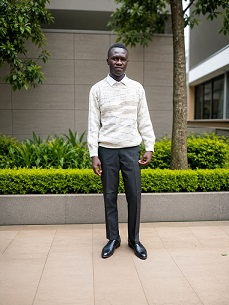

Hi, I'm John Otieno, a student in WDD130. i am passionate about web development and eager to learn new skills in this field. am currently working on various projects to enhance my knowledge and experience in web development.